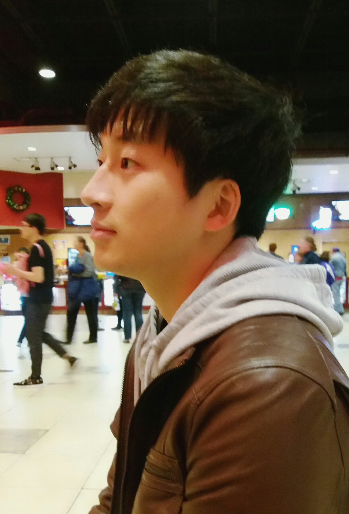

Hi, I am Geonsik Yu, a prospective management scientist / data scientist, interested in
datamining,
network theory,
social simulations, and
optimizations. I am a researcher of
Yonsei Business Research Institute and currently working as a research assistant to professor Sunju Park in the SMAP (Scientific Modeling and Programming) Lab, School of Business, Yonsei University.
I received my master's degree in
Business Administration (Operations Research) from Yonsei University. My academic advisors are
Sunju Park and
Yerim Chung. I also received my bachelor's degree in
Computer Science and
Business Administration from Yonsei University.
As a post-master research assistant, I'm closely working with professor Sunju Park on various projects related to optimization, social simulations, and datamining. Details on works and related projects can be found in the following sections.
Research Interests:
- Datamining
- Network Theory and Information Diffusion
- Social Simulation
- Optimization Applications
External link to my Github account is as follows:
[link]